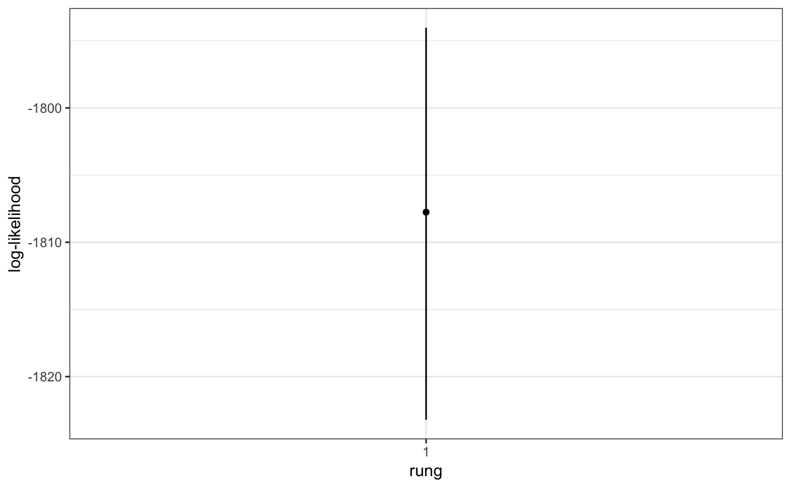
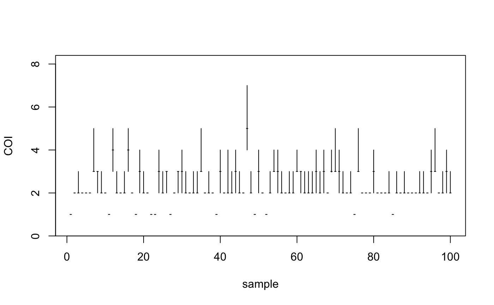

Basic tutorial
Bob Verity
2018-08-23
basic-tutorial.RmdThis vignette demonstrates the use of the MALECOT package on a simple biallelic simulated data set, including installing the package, simulating some data, running the model and performing simple checks on the MCMC output.
Simulating some data
MALECOT contains basic functions for simulating genetic data. The underlying model used in simulation is identical to that used in the inference step, meaning these simulations can be used to test the power and accuracy of the model in different settings.
We start by simulating a biallelic data set of 100 samples at 24 loci, drawn from 3 distinct subpopulations.
sim1 <- sim_data(n = 100, L = 24, K = 3)If we look inside this object using names(sim1) we will see that, in addition to the raw “data” element, the function returns the true value of the grouping, complexity of infection (m), and allele frequencies (p). These can be used to ground truth our inference, and check that the model is behaving as we expect.
Basic analysis
The analysis pipeline is built around MALECOT “projects”, similar to the projects used in programs like STRUCTURE. This project will store all data, parameters, and output for a given analysis in one convenient location.
We start by creating a new project, and loading in the simulated data.
myproj <- malecot_project()
myproj <- bind_data_biallelic(myproj, df = sim1$data, ID_col = 1, pop_col = 2)Notice that the bind_data() function takes a project as input, and returns the modified project as output - this will be the general format for all functions in the pipeline.
Next, we create a new parameter set. There are multiple model parameters that can be defined at this stage - we will use default settings but exploring a range of K (the number of subpopulations) from 1 to 5.
myproj <- new_set(myproj, estimate_error = FALSE)We can now run the main MCMC under these parameter settings. For the sake of this vignette we will use the option silent = TRUE, although in general it is useful to leave this option on to get a running progress update of the MCMC.
myproj <- run_mcmc(myproj, K = 1:2, burnin = 1e3, samples = 1e3, rungs = 1, pb_markdown = TRUE)## Running MCMC for K = 1
## Burn-in phase
##
|
|=================================================================| 100%
## converged within 400 iterations
## Sampling phase
##
|
|=================================================================| 100%
## completed in 0.294151 seconds
##
## Running MCMC for K = 2
## Burn-in phase
##
|
|=================================================================| 100%
## converged within 400 iterations
## Sampling phase
##
|
|=================================================================| 100%
## completed in 0.412496 seconds
##
## Processing results## Total run-time: 1.85 secondsAll output is stored within the myproj object, and we can now produce plots of the posterior population assignment (i.e. “structure” plots), and the posterior complexity of infection of all samples.
plot_loglike_quantiles(myproj, K = 2)
plot_m_quantiles(myproj, K = 2)
plot_qmatrix(myproj, K = 2, divide_ind_on = TRUE)